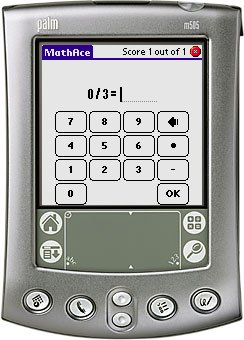

In MathAce you train simple math quizzes - addition, subtraction, multiplication and division. You setup the characteristica of the quiz, takes the quiz and then enter the score into the Last 10 Scores table. The scores can be exported to Memo Pad.
MathAce was created as a response to the wishlist found at: http://www.mpsomaha.org/willow/technology/wishlist.html.
MathAce is released under the GNU General Public License v2 and requires Palm OS 3.0 or better.
You can support this project by donating any amount to my Pay Pal account.
You can get Angles, LcmGcf, MathAce, MixedUp, PowerPlay and Simplify in one Bundle.
Thanks goes to Tony Vincent for the nice icons. Tony has a nice website located at http://www.learninginhand.com which focuses on how to use Handheld computers as a teaching aid.
v1.9 (2006-09-13) Changed build system to use lmake. Added navigation hints for 5-way navigator. Added the Min operand choice. v1.8 (2005-11-22) Added a "Time is up!" banner when the time is up (only for timed games). v1.7 (2005-10-23) The Last 10 Scores list can now be reset. v1.6 (2005-10-18) Fixed a bug where you could get signed quizzes even though you had deselected signed quizzes. Added the option to select which field to blank when in "Solve" mode. Added the option on how scores are tallied. v1.5 (2005-10-08) Timed quizzes now works correctly. The timer is counted down in the background and even though you can halt the display of the timer, it will catch up when you release the button you press. v1.4 (2005-09-30) Fixed a bug in the timed game where, if you let the timer run without taking any quiz data, the Handheld could crash. v1.3 (2005-09-27) Changed versioning from v1rX to v1.X. Changed layout on the preferences screen (requested by Tony Vincent). Added option to not save the score. Added the "Beam Preferences" option. v1r2 (2005-08-15) Fixed a bug where the preferences was not honoured (Dale Ehrhart). v1r1 (2005-08-14) First release of MathAce.